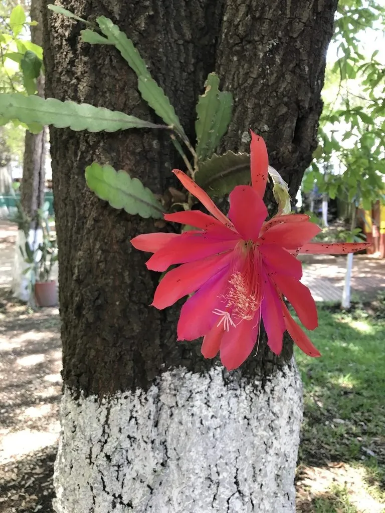

多肉植物 · 植物界
令箭荷花 Epiphyllum ackermannii

仙人掌科附生多肉，扁平茎节形似令箭，春夏开出红色大花，白天开放，是常见的附生仙人掌盆栽，原产墨西哥。
- 分类
- 门被子植物门纲木兰纲目石竹目科仙人掌科属昙花属
- 栖息环境
- 墨西哥热带雨林的树干与岩石上，喜温暖、湿润、半阴
- 地理分布
- 原产墨西哥，世界各地盆栽栽培，中国南方常见
- 保护级别
- 暂无评估；CITES 附录Ⅱ（仙人掌科）
物种志
令箭荷花为仙人掌科昙花属附生肉质植物，茎扁平、叶状，长 30–100 厘米，边缘有粗锯齿，基部常木质化，分枝多。花侧生于茎节边缘，漏斗形，长 10–15 厘米，鲜红色或粉红色，白天开放，花期春季至初夏；果实为长圆形浆果。
令箭荷花原产墨西哥的热带雨林，附生于树干和岩石上，喜温暖、湿润、半阴和通风良好的环境，忌强光暴晒和积水。它茎节扁平、形似古代令箭，因此得名；花朵大而艳丽，白天开放，与夜间开放的昙花是近亲。栽培以疏松透气的腐殖质土或附生基质为主，花后适当修剪，繁殖以茎节扦插为主，扦插前需将茎节晾干一两天，待伤口愈合后再插入基质。
形态与习性
- 株高茎长 30–100 厘米，扁平叶状
- 花期春季至初夏，花红色或粉红色，白天开放
- 果期花后结长圆形浆果
- 光照喜半阴散射光，忌强光暴晒
- 水分喜湿润，忌积水
- 土壤疏松透气、排水良好的腐殖质土
- 繁殖茎节扦插
- 主要用途盆栽观赏、阳台垂吊
趣味知识
- 令箭荷花的扁平茎节形似古代令箭，因此得名。
- 它花朵大而艳丽，白天开放，与夜间开放的昙花是近亲。
- 令箭荷花是附生植物，野生状态下附生在树干和岩石上。
- 用茎节扦插繁殖，晾干伤口后插入微潮基质即可生根。